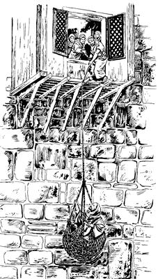

Saulusti nimi olamsiogne “Malia ulamna,” aro lipsiogti, Yesusag “Sikne” aro seneraglamogha (9:1-19a)
9
1 Filipusti Yesus yubu walinge ambare-ambare palamsiog abeneko, Nia Mangkina Salehiropne Yesus yubu ka'ero ulamek nimi sembe Saulus nenekori karongdi, yo senelamog. “Ya'ag olamsinun,” aro yo senelamogti, Saulus nenekori memne Allah sembe pairopnang sikini nubungeag piogti, 2 “Na mome toatnemenba, na as Damsyik Yahudi nimiri Allah yubu lerop ae sale-sale pilamang nimiag tatsinun. Tatsineri, as Damsyik nimi anabiag agha Yesusti Ina pa'abaog Ina nelepto palamang nimia ipsine tanena haing kaupto saelbahineri, as Yerusalem payahinun,” aro Saulusti molbaog.3 Mome molbaogpa, memne Allah sembe pairopnang sikini nubungeri el saeag mome tarogpa, Saulus as Damsyik inaag palamog. As Damsyik peramag palamogpa, imag agha libango aropne haing omomne elag warelobog. 4 Imag agha libango aropne haing omomne warelobogpa, so'oag malingkiogti ka'elamogpa, “Saulus! Saulus! Sa'a sembe ‘Seklebale' aro ulamnelam?” seog.
5 Wene seogpa Saulusti, “Nani, anna etne?” seog.
“Etne,” seogpa, nen lebog yubu enekori, “Na Yesus, andi ‘Seklebale,’ aro ulamnelamne ponekori lelamna. 6 Andi Na malia ulamnelam aghana, wenena sekmendi, as Damsyik pululam. Pimendi wapmenba, andi ulamlulamne nimiri ambatkukang,” seog.
7 Wene aro ambarelamogpa, Saulusap nhon palamek nimi taneko el peramag sekamekti, sindi babe yubu ka'ebaek. Yubu ka'ebaek aghana, nimi nong ibek komdi lo'om paibon seekti, yubu kom taek. 8 Yubu kom taekti wamekpa, Saulus neneko pulingkina sekogti, “Haing kwelekanun,” aro ulamoghag agha, haing kwelekna eraruk taogti, ya'ag taog. Haing aneko ya'ag ubaogpa, nimiri sae salero as Damsyik pabiek. 9 As Damsyik pabiekpa, ik wilindi haing uroba wamogti, kwaneng mag tero koma wamog.
10 As Damsyik Yesus yubu ka'ero ulamogne nhon si Ananias wamog. Wamogti haing uamna kwelekamna senenag agha kemelamogpa, Nia Mangkina Salehiropne Yesusti, “Ananias,” aro yoplamogha ka'ebaogti, “Nia Mangkina Salehiropne, na ane wamna,” seog.
11-12 Ananiasti, “Na wamna,” seogpa, Nia Mangkina Salehiropne Yesusti, “Tarsusne nhon si Saulusti haing uamna kwelekamna senenag agha amik uro yabinepne kembal. Kembalnena, nimi nhon si Ananias Saulus wamlaag wa'ildi, sae usoghag palilamlaba, haing ubaonge kwelekal. Haing uamna kwelekamna senenag agha kembaldi, wene Nanag mololamnel. Ane sembe, sekmendi ina piroba si Ina Peket pululam. Pimendi, Yudasti ae anekoag agha, ‘Tarsusne si Saulus engeropne tala wamla,’ aro nimi wamangneag haibahilulam,” seog.
13 Yesusti wene seogpa, Ananiasti, “Nia Mangkina Salehiropne, nimi ene sembe nimi maiknori yubu lelamangba ka'elamna. ‘An Yesusag “Sikne” aro seneragtop nimi wepsilumne as Yerusalem wamangne Saulusti, “Seklebaik” aro olamsil,’ alamangba ka'elamna.
14 Wene ane yingkina wamlangena, ‘Nimi Yesusag “Sikne” aro seneragtop nimi sae kaupto saelbamsilul,’ aro Yahudi nimi sembe memnang Allah sembe pairopnang sikindo yabori Saulusag yubu pibong. ‘El nuri sae wamlari, undo unualul,’ aro yubu pibongba, wene tane yaori wamla,” aro Ananiasti wene seog.
15 Ananiasti wene seogpa, Nia Mangkina Salehiropne Yesusti, “Pimenag anekoa, el Saulusna, ‘Nari yubu nimi tala-tala wamangne ambatsulul,’ aro webamnange wamla. Webamnangena, ‘Nimi sisa Yahudi nimi komneap, mog so'o saelba urop nimi nubunangap, nimi sisa Yahudi nimi Israel nimi babe pileri, Na Yesus sembe yubu walinge sinag ambatsulul,’ aro webamna,” aro Yesusti wene seog. 16 Seogti, nen tipto ambarelamogti, “Nari el ambatnunnena, Na yubu nimiag ambarelamsilenge sembe seklena seklelamlul. ‘Na Yesus si nubu talul,’ aro Saulus maiknoro seklelamlulne sembe elag ambatnun,” seog.
17 Wene seogpa, Ananias piogti, ae enekoag wa'al piog. Wa'al piogti Saulus usoghag sae palilamogti, “Saulus nangkae, Nia Mangkina Saelbamsilne Yesus, an inaag yalamomba, lag taonge ponekori nanag yubu ambatnel. Ambarelamneldi, ‘Saulusag pimenba, an sae pere agha Saulusti haing kwelekaleba, Allah Eldamne Yame Walinge el kulomag teknero wa'ileri, mikip nembalul,’ aro anag pognelba, yan,” seog.
18 Wene seog abeneko pere haing sikna lilbamlo agha eldi haingag agha seknagha timbaogpa, haing kwelekaog. Haing kwelekaogti, tibanep saog wamogpa, Ananiasti maghag pelengkaog. 19a Maghag pelengkaogpa, kwaneng teogti, nong mikip taogpa, wamog.
Saulusti Yesus sembe as Damsyik nimi ambarelamsiogha (9:19b-25)
19b Saulus poneko mikip taogti, Yesus yubu ka'ero ulamek nimiap ik etbare Damsyik wamog. 20 Wamogti, ta'ap sen koma Saulus nenekori Yahudi nimiri Allah yubu lerop aeag winil talamekag wa'ilamogti, “Yesus poneko Allah Elme,” aro lag phoro nimi ambarelamsiog. 21 Saulusti ambarelamsiogne sembe “Map, yaghe! Nimi eneko kom, te?” alamekti, “Saulus kom te! Eldi samenag, ‘Yesusag “Sikne” aro seneragtop nimi Yerusalem wamangne orog nembahinun,’ aro maiknoro olamsiori, wene babe tane yao. Tane yaongena, ‘Yesusag sikne aro seneragtop nimi Damsyik wamangne babe oro saelbahineri, haing sae kaupto memnang Allah sembe pairopnang sikindo yaboag pabihinun,’ aro yingkilamla aghari,” alamek.
22 Wene alamek aghana, Allahri Saulus mikip nenelamogpa, Yahudi nimi agha Damsyik wamek nimiag Yesus sembe tibin nenero ambarelamsiog. Ambarelamsiogti, “Yesus poneko Allahri, ‘Nimi taulbahimendi, saelbamsululam,’ aro wepto poghol aogne wamla,” aro kekneba maikno Yesus sembe tibin nenero ambarelamsiog. “Yesus Allahri wepto poghol aogne” aro ambarelamsiogne sembe nimi nhondi babe, “Orolena ambarelamsil,” senep kom wamog.
23 Wene aro ambarelamsiogti, ik maikno wamogpa, Yahudi nimiri, “Saulus obukap,” aro yubu nikne saekag lelamek. 24 “Obukap,” aro yubu nikne saekag lelamekne Saulus babe ka'ebaog. Yahudi nimiri, “Saulus obukap,” aro sinag kweleknag as leka kanero solingkirobag ina siram wa'albang yang pang uanebag taneko welamek. 25 “Obukap,” aro welameka sembe ik nhon sum ae inipnag Saulus kau saog uro haingdi piri wiroba lomag wa'iog. Lomag wa'iogpa, eldi yubu ka'erop nimiri kau saog uro wiropne nenekoag agha as kanero leka solingkiropne nenekoag Saulus paiag sip pelengkaek.

As kanero leka solingkiropneag Saulus paiag sip pelengkaek (ACT 9.25)
Saulus Damsyika Yerusalem piogha (9:26-31)
26 Saulus Yerusalem piogti, “Yesus yubu ka'ero ulamang nimiap ma'aptaukap,” sembaog aghana, Yesus yubu ka'erop nimi tanekori, “Paulus sik uro Yesusag wana seneraglamla kom. Yesus yubu ka'erop komne wamlari, maneri lelamla,” aro el sembe log senelamek.
27-28 Wene aro log senelamek aghana nimi nhon si Barnabasti, “Saulus yepnun” aro Saulus poa Yesusti wepto pogsiog nimi tanekoag payaog. Payaogti ambarelamsiogti, “Nimi ene ‘Damsyik punun,’ aro inaag palamoag agha Yesus el whingag lag taori, yubu lebo. Elag yubu leboba, Saulus as Damsyik wamoa Yesus sembe log kom uro Damsyik nimiag ambarelamsio,” seog. Saulus babe Yesusti wepto pogsiog nimi tanekoap nhon wamek. Wamekti, Saulus as Yerusalem nimi wamekne nusamag agha sop-sop pang yang ulamogti, log kom uro “Nia Mangkina Saelbamsilne si Yesusti pognel,” aro ambarelamsiog.
29 As Yerusalem Yahudi nimi wameknena, Yahudi nimiri ul palamekne sunsunum uro saelba ulamekpa, Yahudi nimi agha Yunani nimiri ul palamekne sunsunum uro saelba ulamek nimi babe wamek.b Yahudi nimi agha Yunani yubu lelamek nimi tanekoap Saulusap Yesus sembe yubu lel talamek. Yubu lel talameka sembe Yunani yubu lelamek nimi tanekori, “Saulus obukap,” senelamek. 30 “Obukap,” senelameka elkabo Yesusag “Sikne” aro seneragtop nimi el taekti, sindi el poa Kaisarea pabiekti, “Tarsus pululam,” aro poghek. 31 Poghekti wamekpa, Yesusag “Sikne” aro seneragtop nimi mog so'o Yudeaap, Samariaap, Galileaap wamek nimi ni wana aingniro wamek. Nia Mangkina Salehiropne ponekori yubu sunsunum uro ul palamekpa, Allah Eldamne Yame Walingeri sin yeplamsiogpa, sin mikip talamekti, Yesusag “sikne” aro seneragtop nimi maikno talamek.
Petrusti Eneas wali nembaogti, Tabita kamag nembaogha (9:32-43)
32 Wamekpa Petrus neneko as kanero wamekne kemero poa palamsiogti, Allahri wepsiog nimi Yesusag “Sikne” aro seneragtop nimi as Lida wamekag piog. 33 As Lida aneko palamogpa, nimi nhon si Eneas nong kikiplobogpa, hengkun tai buka tau buka ulamogha hengkun lin bare aeag taogti malamog. 34 Aeag taogti malamogpa, Petrusti Eneasag yubu lelamogti, “Eneas, nangkae. Allahri, ‘Taulbahimendi, saelbamsululam,’ aro wepto poghogne Yesus ponekori wali nemban uaghel. Pukmendi ae kolo togtoae,” seog.
Wene seog abeneko pere wali taogti, pukogti, sekamog. 35 Wali taogpa, nimi as Lida wamekneap, as Saron wamekneap kembaekti, mali-malia ulamekne libekti, Nia Mangkina Saelbamsilne Yesus agha “Sikne” aro nimi niri seneraglamek.
36 Mog so'o eneag as nhon sina Yope babe wamog. As Yope kelabo nhon sina Tabita Yesus yubu ka'ero ulamog kel nhon wamog. Kel ene Yahudi yubuag sina Tabita, aghana Yunani yubuag sina Dorkas alamek.c Eldi wali-walia nimiag ulamogti, nimi sae agha orogne yeplamsiog. 37 Yeplamsiog aghana, nikna niklamogti tebaog. Tebaogpa nimi teptoba aneko mag a'elero ae tika alikinagneag palingkiek. 38 Ae tika alikinagneag palingkiekti ka'elamekpa, “As Lida Yope peramag Petrus neneko yaldi wamla,” ana ka'ebaek. Ka'ebaekti Yesus yubu ka'ero ulamek nimi tanekori nimi phende pogsiekpa, Petrus wamoghag yarekti, “Elem-elem as Yope yalulam,” aro molbarek. 39 Petrus yubu ambattekne ka'ebaogti, elemag sekom agha nelebahiog. Nelebahiogpa, piekti Petrus enero ae tika alikinagneag poa waelbaek. Waelbaekpa yingkina kemelamoghag agha kelabo kaldam kelabo nimi teptoba kanero sekamek. Sekamekti, nongag enektop ag Dorkas kamag wamogti wibatsiog ag toro Petrusag pebarekti engelamek. 40 Engelamekpa Petrusti, “A'un ni lambalulom,” seogti, yabu sanukto pulingkina Allahag molona molbaog. Molbaogti nimi teptoba anekoag kembiagha, “Tabita, puke!” seogpa, haing kwelekaogti, Petrus kembaogti, pukog. 41 Pukogpa, Petrusti kel eneko sae saelbamogti, yepto toro sekirog. Sekirogti Allahri wepsiog nimi Yesusag “Sikne” aro seneragtop nimiap, kaldam kelabo tanekoap yopsiogti, Dorkas kamag taog kel eneko sin saeag tatsiog. 42 Sin saeag tatsiogpa, Dorkas kamag taog yubu eneko as Yope sabo taogpa, nimi maikno tanekori, “Yesus sik uro Nia Mangkina Saelbamsilne,” aro seneraglamek. 43 Petrus neneko as Yope wamogti, nimi nhon si Simon pham sapi kon logto mektopneap ik etbare undo wamdek.